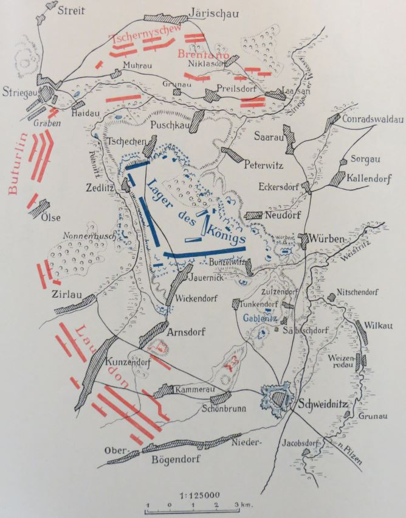
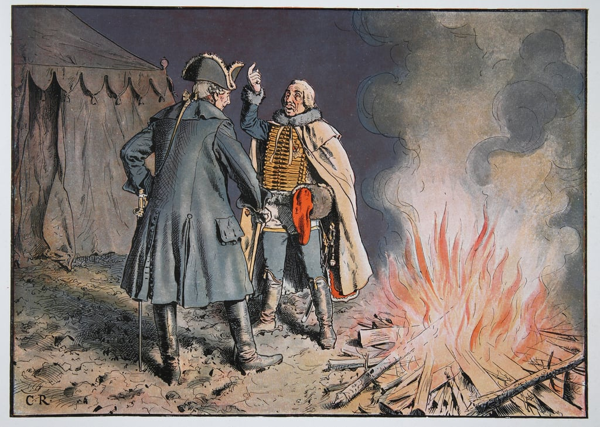
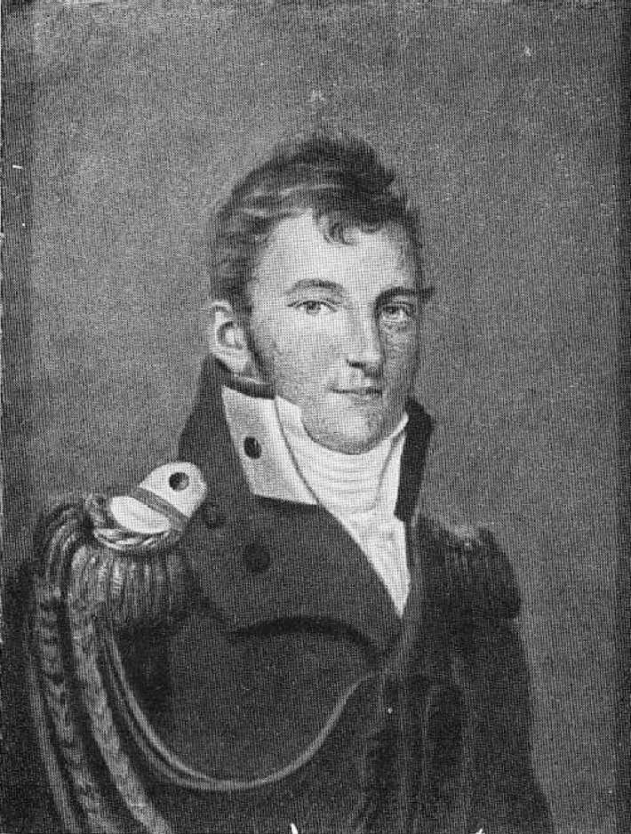
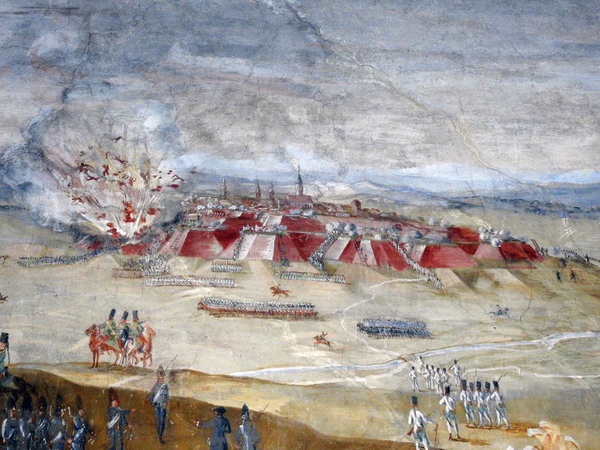

소령 나부랭이의 패기
게시: 2023-06-26T06:30:58+09:00
프로이센군이 1813년 바우첸 패배 이후 슈바이트니츠로 향하자고 주장한 이유 중 하나는 바로 요새 때문이었습니다. 7년 전쟁 중이던 1761년, 프로이센의 프리드리히 대왕은 오스트리아군의 침공에 맞서 가난한 촌마을인 분첼비츠(Bunzelwitz)에 참호로 강화된 진지를 구축하고 농성에 들어갔습니다. 프리드리히 대왕은 유리한 지형과 함께 분첼비츠 바로 남쪽에 위치한 슈바이트비츠 요새의 지원에 의지하여 버틴 것이었는데, 실제로 오스트리아군은 그 진지를 3면에서 포위만 했을 뿐 감히 적극적인 공격에 나서지 못했습니다. 프로이센 측이 러시아에게 슈바이트비츠에서 수데텐 산맥을 등지고 나폴레옹과 대치하자고 주장했던 이유도 바로 그런 역사를 가진 슈바이트비츠의 요새 때문이었습니다. 여기서라면 오스트리아가 준비를 마치고 선전포고를 할 때까지 6주는 버틸 수 있다고 보았습니다.

(1761년 분첼비츠에서 참호를 파고 대치하던 프로이센군과, 그를 3면에서 포위하고 있는 오스트리아군의 모습입니다. 오른쪽 아래에 보이는 것이 슈바이트니츠 요새입니다.)

(이 그림은 1761년 당시 분첼비츠 포위전에서 지텐(Zieten) 장군과 이야기를 나누는 프리드리히 대왕입니다. 이 그림을 보면 때는 늦가을~초겨울 정도로 보입니다만 실제로는 8월~9월이었습니다.) 문제는 1807년 제4차 대불동맹전쟁 때 프로이센을 정복한 프랑스군이 슈바이트비츠까지 덮쳐 그 요새를 파괴했다는 점이었습니다. 그러나 1812년 겨울 나폴레옹이 러시아에서 패퇴했다는 소식이 들려오자마자 프로이센은 서둘러 재무장을 하며 이 슈바이트비츠 요새의 재건을 시작한 바 있었습니다. 바우첸에서 패배하여 다시 슐레지엔으로 밀려날 줄은 몰랐던 프로이센군은 그 동안 잠시 관심을 끊었던 이 요새의 재건이 매우 중요해졌습니다. 프로이센군은 발렌티니(Georg Wilhelm von Valentini) 중령을 먼저 먼저 보내 재건을 감독하게 했고, 이어서 그나이제나우의 참모인 륄(Rühle von Lilienstern) 소령을 보내 이 요새의 준비 상태를 점검하게 했습니다. 륄의 5월 26일 평가에 따르면 요새의 재건은 완성도가 크게 떨어졌지만, 그래도 연합군이 들어와 농성하는 것은 가능했습니다. 한시가 바빴던 륄은 발렌티니와 함께 이 기쁜 소식을 수뇌부에 전하러 그 날로 말을 달렸는데, 도중에 길가 언덕에서 우연히 러시아 짜르의 야전 행궁 일행이 회의를 벌이는 현장을 마주쳤습니다. 짜르의 근위대가 이 프로이센 장교들에게 일단 정지를 명하고 대기를 지시했는데, 그러는 와중에 이들은 알렉산드르가 직접 일행들에게 오데르 강을 건너 후퇴하겠다고 선언하는 목소리를 들었습니다. 발렌티니와 륄에게는 청천벽력 같은 소리였습니다. 좀 더 젊은 륄 소령은 상급자인 발렌티니 중령에게 지금 당장 짜르에게 항의하라고 부추겼으나, 짜르가 초대하지도 않았는데 중령 나부랭이가 끼어들 수 있는 분위기가 아니라고 생각한 발렌티니는 일단 잠자코 있으라고 했습니다. 그러나 그나이제나우의 신임을 받고 있던 륄은 거침없이 발렌티니에게 항의했고 발렌티니도 발끈하여 언성이 높아졌습니다. 이렇게 주변에서 독일어로 두 남자가 언성을 높이며 싸우는 소리가 들리자, 알렉산드르는 그들을 불러와 무슨 일이냐고 물었습니다.

(륄 소령입니다. 그는 당시 33세로서 정말 세상 무서운 줄 모르는 젊은 소령이었습니다. 그는 샤른호스트가 키워낸 개혁파 장교 중 하나였습니다.) 발렌티니는 잠자코 있었으나 륄은 기다렸다는 듯이 퉁명스럽게 슈바이트니츠의 요새에서 얼마든지 농성이 가능한데 후퇴를 한다는 것은 말도 안 된다고 말했습니다. 이 당돌한 젊은 장교의 주장에 대해 알렉산드르는 그 요새로는 버틸 수가 없다고 말했으나 륄은 지지 않고 버티는 것은 물론이고 지형을 볼 줄 아는 나폴레옹은 그 요새를 보기만 해도 감히 공격을 하지 않을 것이라고 대들었습니다. 어이가 없던 알렉산드르는 그걸 입증할 수 있냐고 물었는데, 륄은 자신이 방금 그 요새를 검열하고 돌아오는 길이라고 큰 소리를 쳤습니다. 일이 이렇게 되자 알렉산드르는 한번 고려해보겠다고 하며 자신의 공병감인 지버스(Sievers) 장군을 파견하여 실제로 요새를 점검하게 했습니다. 지버스는 바로 말을 달려 요새를 점검했고, 프로이센 사람들의 말과는 달리 요새는 완성과는 거리가 멀지만 과거 러시아군에게 많은 난관을 안겨주었던 오스만 투르크의 요새들에 비하면 더 나은 상태라고 보고했습니다. 이 모든 것이 5월 26일 하루에 벌어진 일이었습니다. 륄의 당돌함과 지버스 장군의 호의적 보고 덕분에, 연합군은 5월 27일에도 브레슬라우가 아닌 슈바이트니츠 방향으로 행군을 계속 할 수 있었습니다.

(실은 륄 소령의 주장과는 무관하게, 슈바이트니츠 요새는 7년 전쟁 때도 결국 함락되었습니다. 프리드리히 대왕이 분첼니츠 진지에서 철수한 이후에도 오스트리아군은 여전히 남아 슈바이트니츠 요새를 포위 공격했는데, 마침내 10월 1일 공격을 시작했습니다. 그 와중에 요새의 화약고가 폭발하면서 공격하는 측이나 수비하는 측이나 많은 사상자를 냈고, 결국 요새는 함락되었습니다. 그림은 1761년 10월 1일 당시 화약고가 폭발하는 슈바이트니츠 요새의 모습입니다.)
그러나 바클레이는 여전히 부정적이었습니다. 프로이센이 약속한 것과는 달리 비옥하다고 소문난 슐레지엔에는 보급창도 거의 구비되어 있지 않았으므로 오래 버틸 수 없다는 이유에서였습니다. 많은 경우 객관적인 보고서를 올리던 영국 대사 윌슨에 따르면 러시아군은 동맹국 영토인 슐레지엔에서 식량을 함부로 낭비하며 탕진하는 경향을 자주 보인다고 한 것으로 보아 원래는 보급 문제가 심각한 것은 아닌 것 같습니다. 그러나 러시아군의 무절제한 식량 징발은 프로이센군의 분노를 자아내기에 충분했습니다. 무엇보다 바클레이 뿐만 아니라 대부분의 러시아 장군들은 오데르 강을 넘어 후퇴하는 것을 원했습니다. 특히 탄약 부족은 실질적인 문제였습니다. 연합군이 이렇게 갈팡질팡하며 상호불신을 쌓아올리는 사이, 과연 나폴레옹은 어떻게 하고 있었을까요? Source : The Life of Napoleon Bonaparte, by William Milligan Sloane Napoleon and the Struggle for Germany, by Leggiere, Michael V https://www.meisterdrucke.uk/fine-art-prints/Carl-Rochling/276564/In-the-camp-of-Bunzelwitz,-September-1761-.html https://www.kronoskaf.com/syw/index.php?title=1761_-_Austro-Russian_campaign_in_Silesia https://kleist-digital.de/personen/ruehle_august https://www.kronoskaf.com/syw/index.php?title=1761-10-01_-_Storming_of_Schweidnitz